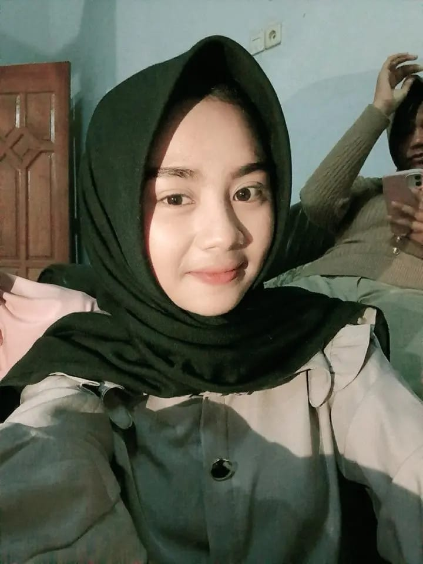

Halo, saya Neta!
Siswa kelas X SMK, calon Junior Web Developer di Kelas Industri UBIG.
Lihat Proyek SayaTentang Saya
Saya tinggal di Malang dan senang mencoba hal baru di dunia teknologi. Saya ingin bisa membuat website yang bermanfaat untuk sekolah dan UMKM di sekitar rumah.
Hobi
- Bermain futsal
- Membaca komik
- Mendesain poster
Cita-cita
Menjadi Full Stack Web Developer.
Langkah yang saya rencanakan:
- Menuntaskan Kelas Industri
- Menguasai HTML, CSS, dan JavaScript
- Membuat proyek website sendiri
Keahlian
- HTML (Menengah)
- CSS (Menengah)
- Git dan GitHub (Dasar)
- Desain poster dengan Canva
- JavaScript (Dasar)
Jadwal Belajar
| Hari | Waktu | Kegiatan |
|---|---|---|
| Senin | 19.00 - 20.00 | Membaca ulang modul |
| Rabu | 19.00 - 21.00 | Mengerjakan tugas praktik |
| Jumat | 19.30 - 20.30 | Merekam video dan menulis laporan |